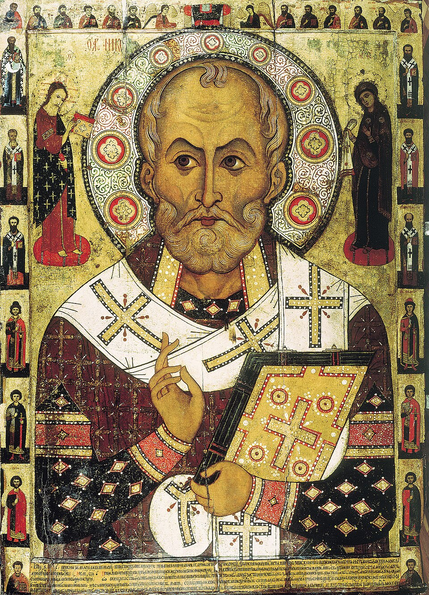
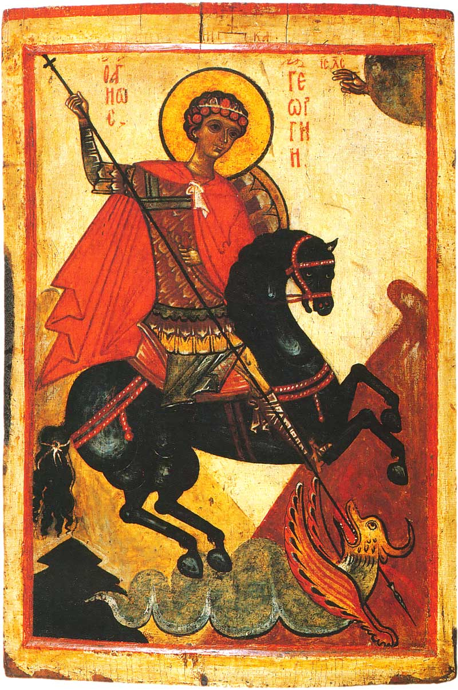
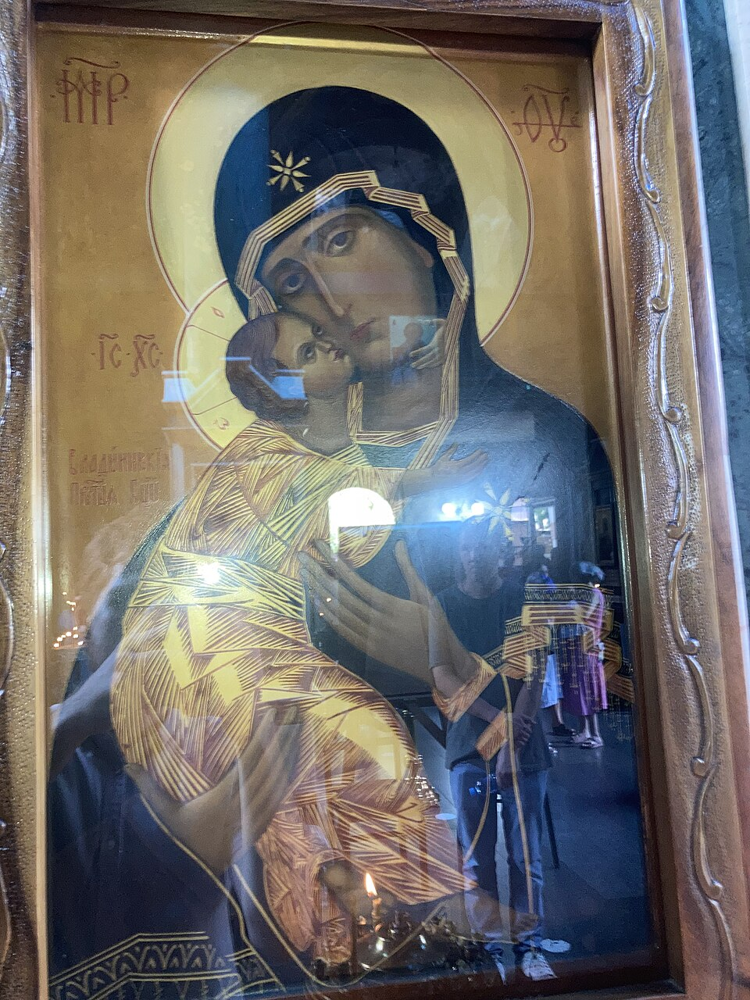
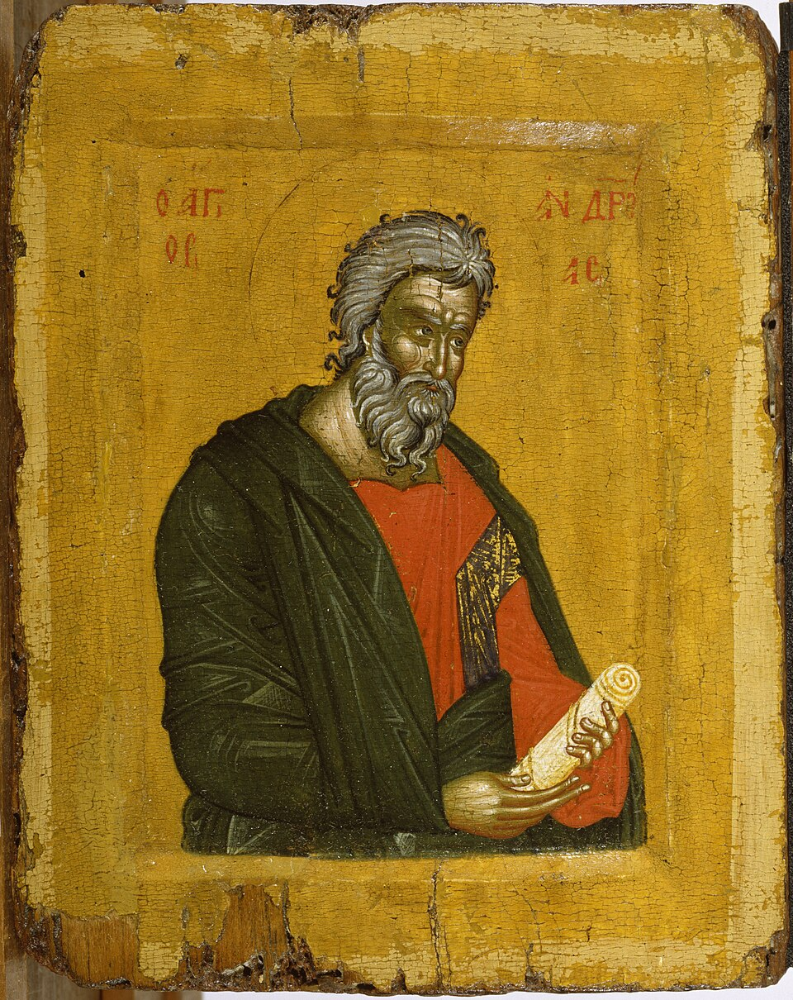
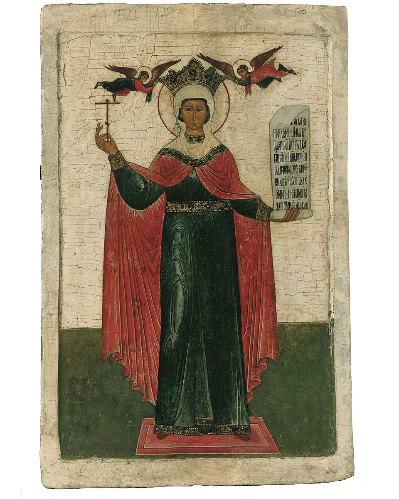
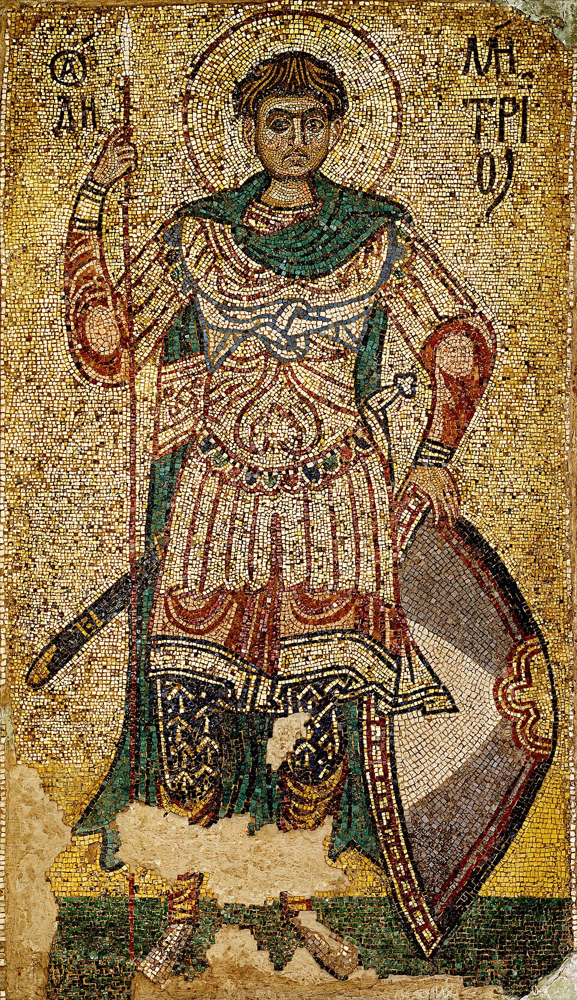
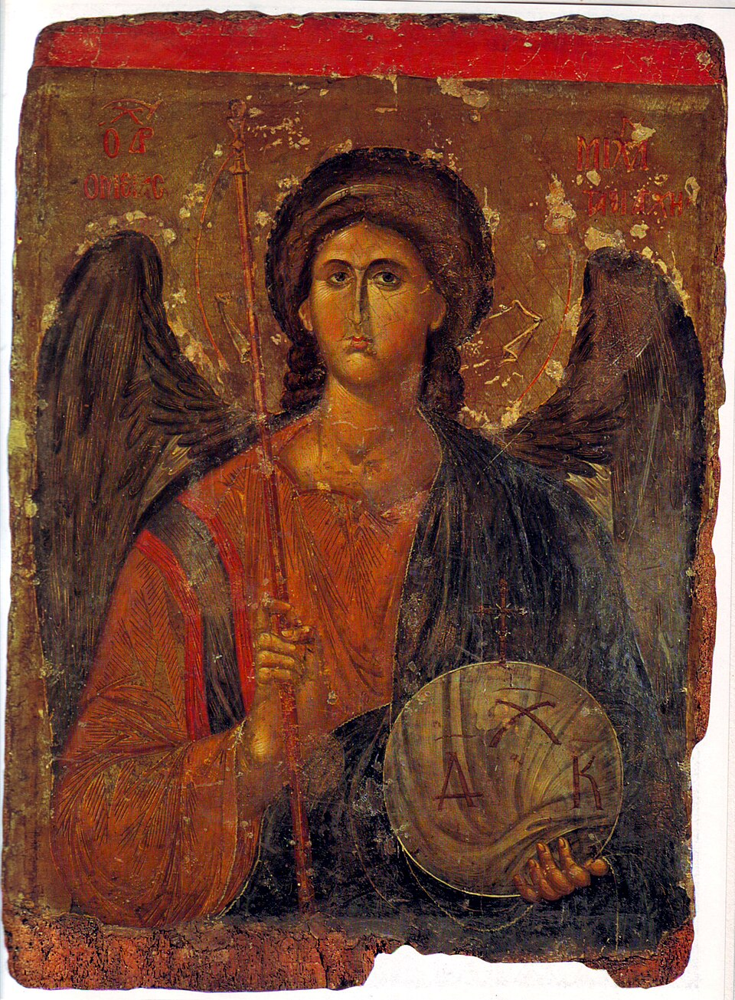

Nicholas
Bishop of Myra. The winter gift-giver in the West is a later costume on this older saint. In the villages he is the protector of travelers, sailors, and the poor. The 1294 panel is the one above.

History, what the church teaches, parish life, and a few saints. The pictures are old paintings, not images made for this site. This page is cultural memory — it does not speak for the Church.
Christianity reached the lower Danube in the Roman centuries. Soldiers, traders, and settlers brought the faith into Dacia and along the Black Sea coast long before there was a Romanian state. The church that remained, north and south of the river, was the Eastern one: liturgy in Greek, then in Slavonic, bishops in communion with Constantinople rather than with the later Latin West. That Byzantine inheritance — chant, calendar, icons, and the shape of the Divine Liturgy — is still the ground under Romanian Orthodoxy, even after the language of worship became Romanian.
In Wallachia and Moldavia the prince endowed monasteries and the church kept the books when the state was small. Schools, chronicles, and printing presses often sat inside monastery walls. In Transylvania the same faith was the faith of the Romanian villages, under a Hungarian and then Habsburg order that privileged other churches. A union with Rome was offered to some communities in the late seventeenth century; many stayed Orthodox. The painted exterior walls of Bucovina and the wooden churches of Maramureș grew from that same world — see painted walls and wooden churches.
Autocephaly — a church governing itself under its own synod — came in stages in the nineteenth century as the modern Romanian state took shape. Recognition from Constantinople followed. The Romanian Orthodox Church became a patriarchate in 1925. The modern Romanian Patriarchate is young next to the habit it serves. The faith in the village is older than the patriarch’s title.
Under that title, ordinary life still turns on the parish: a priest, a church named for a saint, and a feast day for the building itself — the hram. On the hram the village cooks in the yard, people come home from town, and the saint’s name is said aloud over the table. That is as much history as any charter.
One God, known as Father, Son, and Holy Spirit — the Trinity, three persons, one essence, not three gods and not a puzzle solved by a diagram. Jesus Christ is fully God and fully human: the Incarnation, God with us in flesh. Mary is Theotokos, the one who gave birth to God, honored, not worshiped in the place of God.
Salvation, in this tradition, is spoken of as healing and as becoming more like God by grace — theosis — a careful word for a lifelong sharing in God’s life, not a claim that people become God. The church meets this chiefly in the Divine Liturgy, where the Eucharist is the center: bread and wine received as the Body and Blood of Christ. Around that center sit baptism, fasting, confession, and the calendar of feasts.
Icons are venerated, not worshiped as idols. A kiss on an icon is honor aimed at the person shown; the teaching is that the honor passes through the image to the one depicted. That is why a painted wall in a Moldavian yard was a book for people who learned by looking, and why the wood itself is not the point.
The church names seven holy mysteries, often called sacraments in English. Said simply:
The sign of the cross is made with three fingers, right to left. None of this page is a rulebook; a parish priest answers living questions.
Sunday morning is the axis. People light candles, kiss icons, stand through the Liturgy, and receive Communion when they have prepared. Children move more than adults. Old women often know the responses by heart. After the service there may be a short memorial, a blessing of bread, or simply talk in the yard.
Candles are ordinary speech: for the living, for the dead, for a hard week. At memorials for the departed, families bring colivă — boiled wheat sweetened and decorated — shared in the church or after, a plate of remembrance more than a dessert. Fasting seasons shape the kitchen as much as the calendar: Great Lent before Easter, the Nativity fast before Christmas, shorter fasts before the Dormition and the Apostles’ feast, and many Wednesdays and Fridays. How a house keeps those days is local; the shape of the year is on the year.
At home, many houses keep an icon corner — often facing east when the room allows — with a lamp, a towel over the frame, and sometimes a photograph of someone gone. That corner is the small church of the house; more on how it sits in the room is on the house.
The Romanian church uses the Revised Julian calendar for fixed feasts in most parishes, and keeps Pascha — Paște — by the older Orthodox reckoning shared with much of the Christian East. Christmas and Easter therefore do not always fall on the same day as in the West. Feasts, fasts, village hramuri, and the table around them are sketched on the year — cultural memory of how the calendar lands in the kitchen and the yard, not a parish bulletin.
Step inside and the first wall you meet is often the iconostasis: a screen of icons between the nave (naos), where the people stand, and the altar. Doors in that screen open and close with the service; the priest serves at the altar beyond. The nave is open floor more than pews in older village churches — standing, candles, the smell of wax and incense. Outside, Bucovina’s monasteries wear their stories on the plaster; Maramureș raises tall wooden churches with steep roofs. Those buildings have their own pages: painted walls and wooden churches. Out on the road a smaller cross or shrine — the troiță — still marks a fork or a field edge; that wayside stand is on the wayside cross.
These are public-domain icons, photographed from older panels. They are not Romanian frescoes from Voroneț. They are the same saints the Romanian church names, painted in the older Eastern manner.







Bishop of Myra. The winter gift-giver in the West is a later costume on this older saint. In the villages he is the protector of travelers, sailors, and the poor. The 1294 panel is the one above.
A soldier martyr. The dragon story is the one everyone knows. The church also keeps him as a witness who would not sacrifice to the emperor. His day in the spring opens the pastoral year in many villages.
Present in almost every church, often as the tender mother with the child. Major feasts: her birth, her entrance into the temple, the Annunciation, her dormition in August. The Vladimir icon is one of the types copied for centuries.
Tradition in this region says the apostle passed along the Black Sea coast. The Romanian church keeps him as a patron of the country. His day falls at the end of November, near the start of the Christmas fast.
Also called Petka. Her relics are in Iași. She is the saint of the house and of women who keep a hard week. Pilgrimage to her in October is one of the largest gatherings in the country.
A soldier of Thessaloniki, paired with George as a protector of the year. His feast in late October marks the other hinge of the farming calendar, when the flocks come down.
The archangel, keeper of the threshold and of the dead. Village churches named after him are common. His day in November sits near Andrew’s, in the dark weeks before Christmas.
Prince of Moldavia, later canonized for the churches he built and for a life the church reads as defense of the faith. Not every battle story about him is a saint’s life. The monasteries are the part you can still walk into.